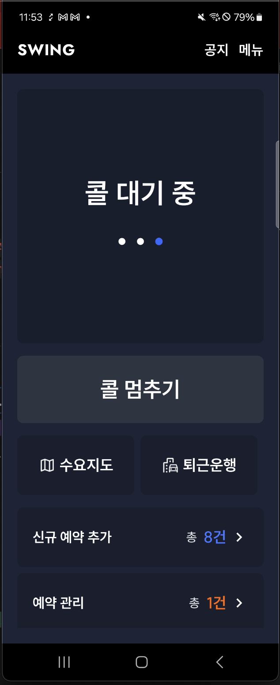
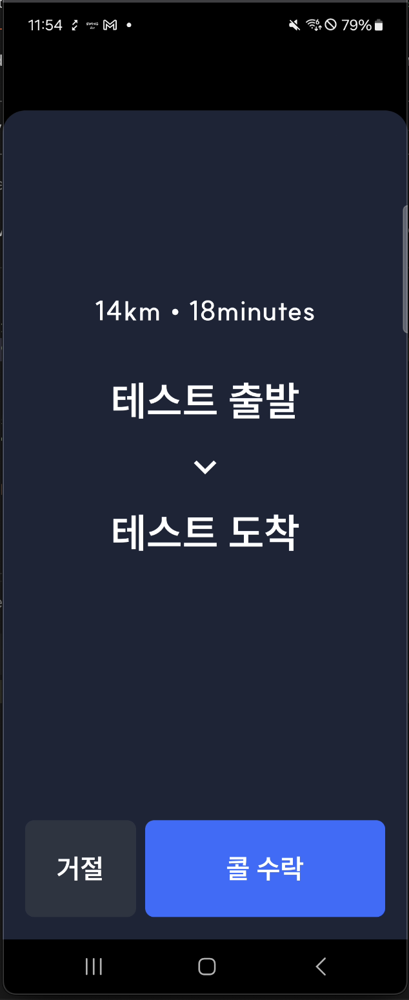
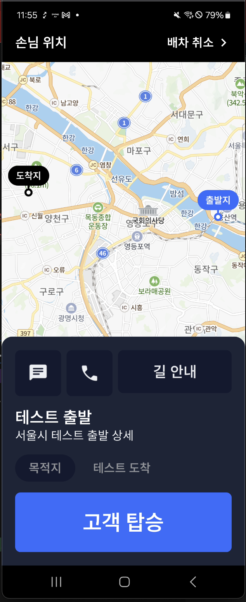

백그라운드에서도 콜을 받아야 함
기사가 다른 앱을 보고 있어도 호출을 놓치면 배차가 끊겼습니다. 위치와 콜 수신을 Foreground Service로 분리해 화면이 보이지 않아도 운행 상태를 유지했습니다.
01 / SWING MOBILITY · ANDROID
SWING TAXI DRIVER 앱을 기획 단계부터 배포까지 Android 1인 개발로 맡았습니다. 기사 앱이 백그라운드에 있어도 콜을 놓치지 않고, 들어온 요청을 순서대로 처리하며, 운행 중에는 지도와 상태를 안정적으로 보여주는 흐름을 만들었습니다.
PROJECT
승객의 호출이 들어오면 기사의 위치를 서버에 올리고, 근처 콜을 알리고, 기사가 수락한 뒤 목적지까지 운행하는 흐름이 이어집니다. 앱이 화면에 떠 있을 때만 동작해서는 안 됐고, 호출이 여러 개 들어오거나 앱이 백그라운드에 있어도 상태가 꼬이지 않아야 했습니다.
제가 맡은 핵심은 화면 구현보다 이 흐름을 Android의 생명주기와 상태 변화에 맞게 연결하는 일이었습니다.
PROBLEM MAP
기사가 다른 앱을 보고 있어도 호출을 놓치면 배차가 끊겼습니다. 위치와 콜 수신을 Foreground Service로 분리해 화면이 보이지 않아도 운행 상태를 유지했습니다.
호출이 동시에 들어오면 만료된 요청과 새 요청이 섞일 수 있었습니다. Queue로 유효한 콜의 순서를 관리하고 수락·거절 상태를 명확히 나눴습니다.
Activity가 다시 만들어져도 서비스와 화면이 같은 운행 상태를 봐야 했습니다. Flow 기반 이벤트 버스로 서비스 이벤트를 화면에 전달했습니다.
정식 서비스에 배포하기 전에는 실제 승객 콜을 발생시킬 방법이 없어 기사 앱의 수락·거절·운행 흐름을 검증할 수 없었습니다. 외부에서 테스트용 콜을 만들 수 있는 앱을 별도로 제작해 배포 전에도 전체 흐름을 검증할 수 있게 했습니다.
PROBLEM → DECISION
콜 요청이 여러 개 들어오면 만료된 요청을 제외하고 순서대로 보여줘야 했습니다. Activity가 사라져도 Service는 살아 있어야 했고, 수락 후에는 화면과 백그라운드 로직이 같은 상태를 봐야 했습니다.
실시간 위치 업로드와 콜 수신을 연결하기 위해 WebSocket/STOMP 모듈을 직접 구성했습니다. Android 공식 지원이 부족한 부분은 오픈소스 구현을 분석해 Kotlin 환경에 맞게 커스텀하고, 수신한 요청은 Queue로 관리했습니다.
위치 수집과 콜 수신을 명시적인 서비스 상태로 두어, 사용자가 현재 위치가 공유되고 콜을 받을 수 있는 상태임을 알 수 있게 했습니다.
Queue로 콜 순서를 보장하고 Service와 Activity 사이에는 Flow 기반 이벤트 버스를 두었습니다. 화면이 다시 만들어져도 수신 순서와 운행 상태를 이어갈 수 있게 했습니다.
AndroidBindingView를 사용해 네이버 지도를 Compose 안에서 사용할 수 있는 모듈을 만들고, 마커와 지도 상태를 외부에서 관리할 수 있도록 구성했습니다.
RESULT
SCREENS


